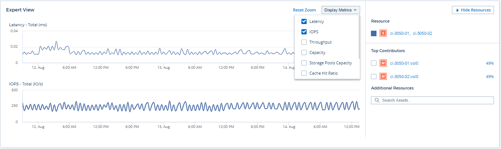

Expert View
Contributors
 Download PDF of this page
Download PDF of this page
The Expert View section of an asset page enables you to view a performance sample for the base asset based on any number of applicable metrics in context with a chosen time period in the performance chart and any assets related to it.
Using the Expert View section
The following is an example of the Expert View section in a storage asset page:

You can select the metrics you want to view in the performance chart for the time period selected.
The Resources section shows the name of the base asset and the color representing the base asset in the performance chart. If the Top Correlated section does not contain an asset you want to view in the performance chart, you can use the Search Assets box in the Additional Resources section to locate the asset and add it to the performance chart. As you add resources, they appear in the Additional resources section.
Also shown in the Resources section, when applicable, are any assets related to the base asset in the following categories:
-
Top correlated
Shows the assets that have a high correlation (percentage) with one or more performance metrics to the base asset.
-
Top contributors
Shows the assets that contribute (percentage) to the base asset.
-
Greedy
Shows the assets that take away system resources from the asset through sharing the same resources, such as hosts, networks, and storage.
-
Degraded
Shows the assets that are depleted of system resources due to this asset.
Expert View metric definitions
The Expert View section of an asset page displays several metrics based on the time period selected for the asset. Each metric is displayed in its own performance chart. You can add or remove metrics and related assets from the charts depending on what data you want to see. The metrics you can choose will vary depending on asset type.
Metric |
Description |
BB credit zero Rx, Tx |
Number of times the receive/transmit buffer-to-buffer credit count transitioned to zero during the sampling period. This metric represents the number of times the attached port had to stop transmitting because this port was out of credits to provide. |
BB credit zero duration Tx |
Time in milliseconds during which the transmit BB credit was zero during the sampling interval. |
Cache hit ratio (Total, Read, Write) % |
Percentage of requests that result in cache hits. The higher the number of hits versus accesses to the volume, the better is the performance. This column is empty for storage arrays that do not collect cache hit information. |
Cache utilization (Total) % |
Total percentage of cache requests that result in cache hits |
Class 3 discards |
Count of Fibre Channel Class 3 data transport discards. |
CPU utilization (Total) % |
Amount of actively used CPU resources, as a percentage of total available (over all virtual CPUs). |
CRC error |
Number of frames with invalid cyclic redundancy checks (CRCs) detected by the port during the sampling period |
Frame rate |
Transmit frame rate in frames per second (FPS) |
Frame size average (Rx, Tx) |
Ratio of traffic to frame size. This metric enables you to identify whether there are any overhead frames in the fabric. |
Frame size too long |
Count of Fibre Channel data transmission frames that are too long. |
Frame size too short |
Count of Fibre Channel data transmission frames that are too short. |
I/O density (Total, Read, Write) |
Number of IOPS divided by used capacity (as acquired from the most recent inventory poll of the data source) for the Volume, Internal Volume or Storage element. Measured in number of I/O operations per second per TB. |
IOPS (Total, Read, Write) |
Number of read/write I/O service requests passing through the I/O channel or a portion of that channel per unit of time (measured in I/O per sec) |
IP throughput (Total, Read, Write) |
Total: Aggregated rate at which IP data was transmitted and received in megabytes per second. |
Read: IP Throughput (Receive): |
Average rate at which IP data was received in megabytes per second. |
Write: IP Throughput (Transmit): |
Average rate at which IP data was transmitted in megabytes per second. |
Latency (Total, Read, Write) |
Latency (R&W): Rate at which data is read or written to the virtual machines in a fixed amount of time. The value is measured in megabytes per second. |
Latency: |
Average response time from the virtual machines in a data store. |
Top Latency: |
The highest response time from the virtual machines in a data store. |
Link failure |
Number of link failures detected by the port during the sampling period. |
Link reset Rx, Tx |
Number of receive or transmit link resets during the sampling period. This metric represents the number of link resets that were issued by the attached port to this port. |
Memory utilization (Total) % |
Threshold for the memory used by the host. |
Partial R/W (Total) % |
Total number of times that a read/write operation crosses a stripe boundary on any disk module in a RAID 5, RAID 1/0, or RAID 0 LUN Generally, stripe crossings are not beneficial, because each one requires an additional I/O. A low percentage indicates an efficient stripe element size and is an indication of improper alignment of a volume (or a NetApp LUN). For CLARiiON, this value is the number of stripe crossings divided by the total number of IOPS. |
Port errors |
Report of port errors over the sampling period/given time span. |
Signal loss count |
Number of signal loss errors. If a signal loss error occurs, there is no electrical connection, and a physical problem exists. |
Swap rate (Total Rate, In rate, Out rate) |
Rate at which memory is swapped in, out, or both from disk to active memory during the sampling period. This counter applies to virtual machines. |
Sync loss count |
Number of synchronization loss errors. If a synchronization loss error occurs, the hardware cannot make sense of the traffic or lock onto it. All the equipment might not be using the same data rate, or the optics or physical connections might be of poor quality. The port must resynchronize after each such error, which impacts system performance. Measured in KB/sec. |
Throughput (Total, Read, Write) |
Rate at which data is being transmitted, received, or both in a fixed amount of time in response to I/O service requests (measured in MB per sec). |
Timeout discard frames - Tx |
Count of discarded transmit frames caused by timeout. |
Traffic rate (Total, Read, Write) |
Traffic transmitted, received, or both received during the sampling period, in mebibytes per second. |
Traffic utilization (Total, Read, Write) |
Ratio of traffic received/transmitted/total to receive/transmit/total capacity, during the sampling period. |
Utilization (Total, Read, Write) % |
Percentage of available bandwidth used for transmission (Tx) and reception (Rx). |
Write pending (Total) |
Number of write I/O service requests that are pending. |
Using the Expert View section
The Expert view section enables you to view performance charts for an asset based on any number of applicable metrics during a chosen time period, and to add related assets to compare and contrast asset and related asset performance over different time periods.
-
Locate an asset page by doing either of the following:
-
Search for and select a specific asset.
-
Select an asset from a dashboard widget.
-
Query for a set of assets and select one from the results list.
The asset page displays. By default, the performance chart shows two metrics for time period selected for the asset page. For example, for a storage, the performance chart shows latency and total IOPS by default. The Resources section displays the resource name and an Additional resources section, which enables you to search for assets. Depending on the asset, you might also see assets in the Top correlated, Top contributor, Greedy, and Degraded sections. If there are no assets relevant to these sections, they are not displayed.
-
-
You can add a performance chart for a metric by clicking Display Metrics and selecting the metrics you want displayed.
A separate chart is displayed for each metric selected. The chart displays the data for the selected time period. You can change the time period by clicking on another time period in the top right corner of the asset page, or by zooming in on any chart.
Click on Display Metrics to de-select any chart. The performance chart for the metric is removed from Expert View.
-
You can position your cursor over the chart and change the metric data that displays for that chart by clicking any of the following, depending on the asset:
-
Read, Write, or Total
-
Tx, Rx, or Total
Total is the default.
You can drag your cursor over the data points in the chart to see how the value of the metric changes over the time period selected.
-
-
In the Resources section, you can add any related assets to the performance charts:
-
You can select a related asset in the Top Correlated, Top Contributors, Greedy, and Degraded sections to add data from that asset to the performance chart for each selected metric.
After you select the asset, a color block appears next to the asset to denote the color of its data points in the chart.
-
-
Click on Hide Resources to hide the additional resources pane. Click on Resources to show the pane.
-
For any asset shown, you can click the asset name to display its asset page, or you can click the percentage that the asset correlates or contributes to the base asset to view more information about the asset’s relation to the base asset.
For example, clicking the linked percentage next to a top correlated asset displays an informational message comparing the type of correlation that asset has with the base asset.
-
If the Top correlated section does not contain an asset you want to display in a performance chart for comparison purposes, you can use the Search assets box in the Additional resources section to locate other assets.
-
After you select an asset, it displays in the additional resources section. When you no longer want to view information about the asset, click .
 Edit on GitHub
Edit on GitHub